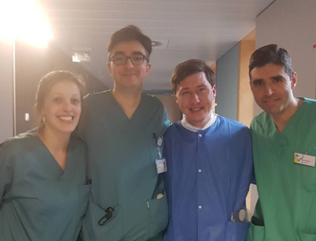
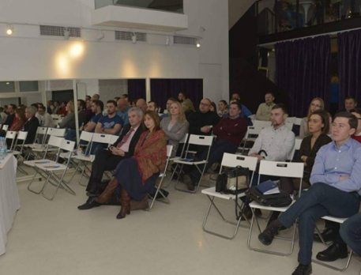

Душа моя озарена неземной радостью, как эти чудесные весенние утра, которыми я наслаждаюсь от всего сердца. Я совсем один и блаженствую в здешнем краю, словно созданном для таких, как я. Я так счастлив, мой друг, так упоен ощущением покоя, что искусство мое страдает от этого. Ни одного штриха не мог бы я сделать, а никогда не был таким большим художником, как в эти минуты.
Когда от милой моей долины поднимается пар и полдневное солнце стоит над непроницаемой чащей темного леса и лишь редкий луч проскальзывает в его святая святых, а я лежу в высокой траве у быстрого ручья и, прильнув к земле, вижу тысячи всевозможных былинок и чувствую, как близок моему сердцу крошечный мирок, что снует между стебельками, наблюдаю эти неисчислимые, непостижимые разновидности червяков и мошек и чувствую близость всемогущего, создавшего нас по своему подобию, веяние вселюбящего, судившего нам парить в вечном блаженстве, когда взор мой туманится и все вокруг меня и небо надо мной запечатлены в моей душе, точно образ возлюбленной, - тогда, дорогой друг, меня часто томит мысль: "Ах! Как бы выразить, как бы вдохнуть в рисунок то, что так полно, так трепетно живет во мне, запечатлеть отражение моей души, как душа моя - отражение предвечного бога
крошечный мирок, что снует между стебельками, наблюдаю эти неисчислимые, непостижимые разновидности червяков и мошек и чувствую близость всемогущего, создавшего нас по своему подобию, веяние вселюбящего

Душа моя озарена неземной радостью, как эти чудесные весенние утра, которыми я наслаждаюсь от всего сердца. Я совсем один и блаженствую в здешнем краю, словно созданном для таких, как я. Я так счастлив, мой друг, так упоен ощущением покоя, что искусство мое страдает от этого. Ни одного штриха не мог бы я сделать, а никогда не был таким большим художником, как в эти минуты.
Когда от милой моей долины поднимается пар и полдневное солнце стоит над непроницаемой чащей темного леса и лишь редкий луч проскальзывает в его святая святых, а я лежу в высокой траве у быстрого ручья и, прильнув к земле, вижу тысячи всевозможных былинок и чувствую, как близок моему сердцу крошечный мирок, что снует между стебельками, наблюдаю эти неисчислимые, непостижимые разновидности червяков и мошек и чувствую близость всемогущего, создавшего нас по своему подобию, веяние вселюбящего, судившего нам парить в вечном блаженстве, когда взор мой туманится и все вокруг меня и небо надо мной запечатлены в моей душе, точно образ возлюбленной, - тогда, дорогой друг, меня часто томит мысль: "Ах! Как бы выразить, как бы вдохнуть в рисунок то, что так полно, так трепетно живет во мне, запечатлеть отражение моей души, как душа моя - отражение предвечного бога